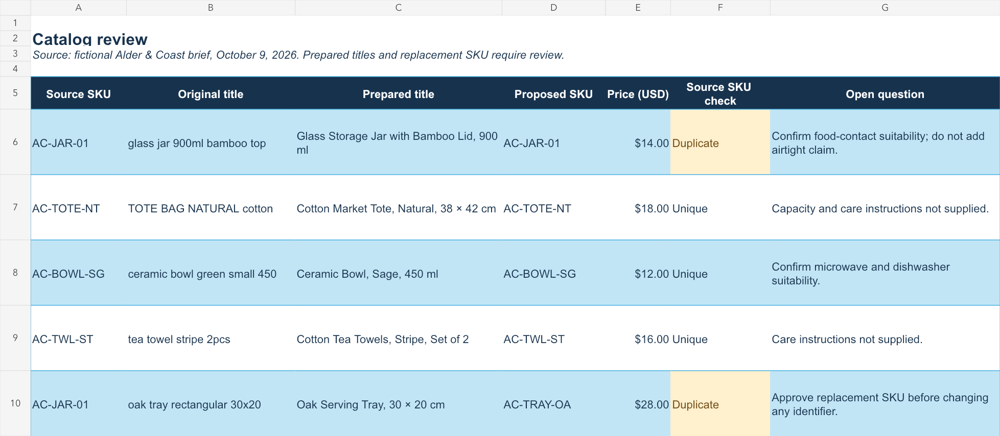

You share the brief
Product facts, brand tone, references, and the required format.
YOUR FRIENDLY NEIGHBORHOOD
E-commerce virtual assistant.
Clear listings.
Thoughtful store support.
ILOILO, PHILIPPINES · GMT+8

MY MISSION
I help bring order to the everyday work behind an online store.
Product listings. Product research. Descriptions that answer shoppers’ questions.
Meet your next VA ↘01 THE ORIGIN STORY
NO CAPE.Careful with the details.
Curious about what's next.
I'm Joseph, an e-commerce virtual assistant building my practice around product listings, research, and clear product descriptions. My data-encoding background is the starting point: organized information, clear records, and work that's ready for review.
I'm now developing my skills through structured projects—product data, customer requests, and website content. I'm looking for a small, clearly defined task where I can follow your process and contribute with care.
Coca-Cola Europacific Aboitiz Philippines
February 2023 — November 202502 THE UTILITY BELT
Start with a focused task and a clear deliverable. Explore my practice samples, then let’s agree on your process and scope.
Draft titles, descriptions, SKUs, variants, prices, and a list of missing product details.
See the catalog sample ↗02 / RESEARCHCompare public product information, check source facts, and explain which keywords fit.
Open the research sample ↗03 / PRODUCT COPYTurn supplied specifications into readable descriptions and benefit-focused bullet drafts.
Try the before & after ↗04 / STORE SUPPORTOrganize product records, flag duplicate SKUs, and prepare clear review notes.
Follow the decision log ↗05 / COMMUNICATIONDraft helpful replies to order and product questions using your approved policies.
Read the reply samples ↗06 / SEO FOUNDATIONSReview page titles, headings, descriptions, and image text; prepare suggested edits.
Explore the SEO review ↗NEXT LEVEL, IN PROGRESS
These tools are my learning roadmap, not platforms I claim to have managed for clients.
Practice goal: prepare draft listings, understand variants, and review order records.
Practice goal: clean product information, organize inquiries, and prepare consistent product layouts.
Practice goal: interpret page and query reports, explore a crawl, and compare keyword ideas with page intent.
Practice goal: connect intake to a review sheet, check required fields, and prevent duplicates. See the learning plan ↗
IN ACTION THE LISTING LAB
Illustrative exercise · Fictional product and supplied brief. This is a copy sample, not a live store or a client result.
Fictional brief: 100% cotton · natural color · 38 × 42 cm · open top · no inner pocket.
A CONCEPT ILLUSTRATION, NOT A PRODUCT PHOTOGRAPH100% cotton. 38x42. open bag no pocket. for shopping or things.
Useful facts, but shoppers need a clearer title, structure, and an explicit pocket detail.
A simple carryall for everyday errands. This natural-color cotton tote has an open top for easy access and one main compartment to keep the design straightforward.
Before publishing: confirm care instructions, handle length, load guidance, price, and SKU with the owner.
AI-assisted portfolio exercise. No unsupported durability or sustainability claims.
Three fictional alternatives from a made-up buyer brief. The task: identify a lightweight everyday tote with a closure and an inner pocket. Prices are illustrative USD amounts, not market research.
| Brief detail | Everyday tote | Zip commuter | Market carryall |
|---|---|---|---|
| Sample price | $12 | $18 | $16 |
| Material | Cotton | Polyester | Cotton canvas |
| Closure / pocket | Open / none | Zip / one inner | Snap / none |
| Weight provided? | No | No | No |
| Brief fit | Missing both features | Meets both features | Missing inner pocket |
Recommendation: Shortlist the Zip commuter on feature fit, then request actual weight, dimensions, care details, and supplier documentation. Do not call it lightweight until verified.
Download the comparison worksheet ↓AI-assisted exercise. No supplier vetting, search-volume data, profit estimate, or best-seller claim.
Product facts, brand tone, references, and the required format.
Organized fields, readable copy, and questions where facts are missing.
A clear file with suggested changes, checks, and next steps.
03 THE MISSION FILES
Independent practice and research projects, with source files and clear explanations. No paid-client results are claimed.
Showing all 3 projects.

STORE OPERATIONS / FICTIONAL BRIEF
A three-tab workbook, source records, customer reply drafts, and the questions that need an owner's decision.
Open the case study ↗Download workbook ↓SEO / OWN-WEBSITE REVIEW · OCT 2026
Captured metadata, observed findings, a keyword-to-page map, and proposed copy—with evidence you can inspect.
Read the SEO review ↗1 proposed title
5 bullet drafts
18 keyword decisions
PRODUCT LISTING / INDEPENDENT RESEARCH
A proposed OXO listing rewrite using public product sources, with fact checks and an editable keyword workbook.
Inspect the research ↗Every file has a scope. Every claim has a limit.
That's part of doing careful work.
BONUS A QUICK SIDE QUEST
Take a 30-second break. Catch the falling task cards before they escape your web. A little focus goes a long way.
04 THE NEXT CHAPTER
Got a task?
Let's untangle it.
A listing batch, a product research brief, or descriptions that need a clearer message. Tell me the scope and your preferred timeline.
josephberin12356@gmail.com ↗